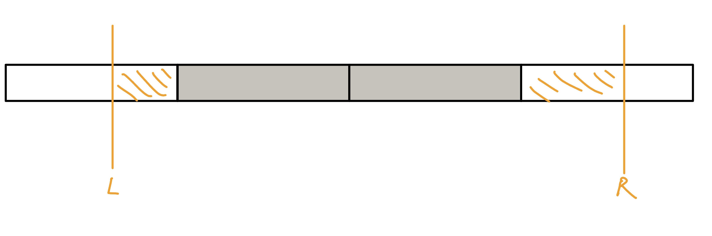
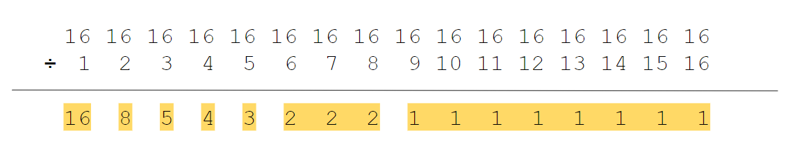

根號分塊
雖然時間複雜度比線段樹還差，但分塊的強處在維護資訊上更加彈性，特別是修改時難以快速更新的類型，這部分是線段樹所不及的
序列分塊¶
我們將序列每 k 個當成一個 Block，對於每筆 query，會包含中間完整的 Block 與旁邊兩個不完整的 Block，對於完整的我們需要先預處理好答案，對於不完整的直接暴力算，複雜度 O(n / k + k)

CS Academy Modulo Queries
給一個長度為 \(n\) 的陣列 \(a_1, \ldots, a_n\)，有 \(q\) 筆查詢如下 :
- \(\text{query}(l, r, k):\) 輸出 \(\max \limits_{i=l\ldots r} a_i\) % \(k\)
\(1\le n,q,a_i,k\le 4\times 10^4\)
思路
先將 a 複製一個新陣列，將新陣列 sort 好然後慢慢放寬 threshold，將每個元素加到各自的 block 裡面，對於每個 block 令 mx[i] 為 block 內 < i 的最大值，這可以用類似前綴和的方式建好，對於每個 block 我們令 dp[i] 為 block 內 mod i 之下的最大值，這個可以去跑 mx[i], mx[i * 2], mx[i * 3], ... 取 max。最後，對於每筆詢問暴力處理不完整塊，O(1) 查表完整塊即可。這樣複雜度 \(O(\frac{n}{B}\times k\log k + qB)\)，\(B\) 取 \(k \log k\) 可得 \(O(k\sqrt{k \log k})\)
CF 785 E. Anton and Permutation
給一個 \(1\ldots n\) 的 permutation，\(q\) 次 swap\((i,j)\)，每次 swap 完輸出逆序數對數量
\(n\le 2\times 10^5, q\le 5\times 10^4\)
思路
將序列每 sqrt(n) 個當成一個 block。假如交換 i 位置和 j 位置（假設 i < j），那麼只需要統計 [i + 1, j - 1] 這個區間內比 a[i] 大的有幾個, 小的有幾個，比 a[j] 位置的數大的有幾個, 小的有幾個即可。所以在 query 時對於完整的 block 直接在 block 內二分（對於每個 block 開一個大小為 n 的 BIT）。
CF 617 E. XOR and Favorite Number
給一個長度為 \(n\) 的序列 \(a_1, \ldots ,a_n\)，與 \(q\) 次詢問 :
- \(\text{query}(l,r):\) 輸出區間內有多少個 subarray 的 \(a_i \oplus \ldots \oplus a_j=k\)
\(n,q\le 10^5,0\le k\le 10^6\)
值域分塊¶
一般來說，值域分塊會作為一個輔助工具出現在題目當中。
依照將值域分成每 k 個一塊，修改操作就直接 O(1) 更新「值域」所在的 block 的資訊，查詢操作就一樣分成完整的 block 與不完整的，不完整的 block 就直接暴力算，完整的直接取整個 block 的資訊
集合第 k 小
給一個長度為 \(n\) 的序列，維護以下操作 :
-
\(\text{insert}(x):\) 插入 \(x\)
-
\(\text{erase}(x):\) 刪除 \(x\)
-
\(\text{query}(k):\) 詢問集合中第 \(k\) 小的元素
\(n,x\le 5\times 10^4\)
思路
將值域 C 分成每 sqrt(C) 一塊
對於每個 insert，我們直接將值域 x 所在的塊的 cnt++，並將 v[x]++
對於每個 query，我們一次 jump 一整個 block 直到我們發現當前 jump 過的 block 的總和 <= k，再去暴力掃過該 block，看 v[x] 總和何時會 >= k
求第 k 小（支持單點修改）
給一個長度為 \(n\) 的陣列 \(a\)，有 \(q\) 筆操作 :
-
單點修改
-
詢問區間第 k 小
\(1\le n\le 5\times 10^4\)
思路
分成 sqrt(n) 塊， 塊的大小為 sqrt(n)，塊內維護有序數列。修改就暴力重構塊，這不會超時。對於每一個詢問，先二分一個區間權值（發現這道題是1~1e9），然後去統計所求的區間內小於這個數的個數有多少。對於兩邊不完整的塊暴力統計，對於完整的塊，則二分查找最小的數，即可在 log 時間內得到答案。
參考自 : 洛谷題解
洛谷 P4867 Gty的二逼妹子序列
給 \(n\) 個數 \(a_1, \ldots ,a_n\)，有 \(q\) 筆查詢如下 :
- \(\text{query}(l,r,a,b):\) 問在 \(a_l,\ldots ,a_r\) 中，值域在 \([a,b]\) 之間有幾種
\(n\le 10^5, m\le 10^6, 1\le l,r,a,b\le n\)
思路
利用莫隊離線維護 query，對於詢問 [a, b] 之間的數字，使用值域分塊
因為不管是陣列大小還是值域都是 \(\le n\)，所以莫隊與值域分塊的 block size 都可設成 \(O(\sqrt{n})\)
code
操作分塊¶
常常出現在「不帶修改很可做，但帶了修就都沒法維護了，而且只有修改的話不難維護」的題上。
操作分塊就是對操作序列（詢問 + 修改）進行分塊。處理到一塊時，我們已經將操作分成了兩個部分：
- 先前塊內的修改。這個在每次做完一個 Block 的時候就可以直接修改原本的陣列。
- 當前塊內的修改。而這些修改總數不會達到塊大小，因此可以樸素地計算這部分的貢獻。
在 block 裡的，暴力掃過，複雜度 O(q * k)
每次看完一個 block 將直接修改原本的陣列，複雜度 O((q / k) * q)
LOJ #6280. 数列分块入门 4
給一個長度為 \(n\) 的陣列 \(a\)，有 \(q\) 筆操作 :
-
區間加值
-
區間求和
\(1\le n\le 5\times 10^4\)
思路
將操作依照時間小到大分塊，每 k 個一組。對於每個 query(ql, qr)，暴力掃過跑該 block 裡面所有的 add(l, r)，計算 [l, r] 在 [ql, qr] 的貢獻。對於每個 block 結束後再重新執行一次前綴和，複雜度 O(q * k + (n / k) * n)
APIO2019 桥梁
給定一張 \(n\) 個點 \(m\) 邊的無向圖和 \(q\) 次詢問。可以：
-
修改某條邊的邊權
-
從點 \(u\) 出發，只經過邊權 \(\le k\) 的邊，可以到幾個點
\(1\le n\le 5\times 10^4,0\le m\le 10^5,1\le q\le 10^5\)
思路
將操作依照時間小到大分塊，每 k 個一組。每組將裡面的 query 從大到小處理，對於每一個 query，依序加入非修改的邊，有修改的邊就直接全部暴力掃過，掃完之後要到下一個 query 的時候需要 rollback。
非修改邊在一個 block 中最多掃到 m 個，共 O(m * (q / k))，修改的邊 O(q * k)，還要乘上 rollback dsu 的 O(log n)，複雜度 O(m * (q / k) * logn + q * k * log n)
數論分塊¶
Zerojudge d193. 11526 - H(n)
給定 \(1\le n\le 10^9\)，求

對於 \(i\le \sqrt{n}\)，最多只有 \(\sqrt{n}\) 種不同的值
對於 \(i > \sqrt{n}\)，\(\frac{n}{i}\) 最多只有 \(\sqrt{n}\) 種不同的值
code
CSES - Sum of Divisors
令 \(\sigma(n)\) 為 \(n\) 的因數相加總和，問 \(\sum \limits_{i=1}^n \sigma(n)\)
\(1\le n\le 10^{12}\)
思路
觀察 12

每個數字出現 \(\frac{n}{i}\) 次，答案就是 \(\sum\frac{n}{i}\times i\) 其中 \(i=1...n\)

就變成 zerojudge - H(n) 的題目了
code
洛谷 P2261 [CQOI2007] 余数求和
給 \(n,k\) 問
\(n,k\le 10^9\)
思路
原式可以寫成 \(\displaystyle \sum _ {i=1}^n k - i\times \lfloor \frac{k}{i} \rfloor = n\times k - \sum \limits_{i=1}^n \lfloor \frac{k}{i} \rfloor \times i\)
根號分治¶
洛谷 P3396 哈希冲突
給定一個長度 \(n\) 陣列 \(a_0 \dots, a_{n-1}\)，初始每數皆為 \(0\)，
- \(\text{add}(i,v):\) 將 \(a_i\) 加 \(v\)
- \(\text{query}(p, x):\) 輸出所有 \(i\) % \(p = x\) 的 \(a_i\) 值加總
\(n,m\le 1.5 \times 10^5, 1\le a_i \le 1000\)
思路
定義 \(sum[p][x]\) 為 \(i\) % \(p = x\) 的 \(a_i\) 值加總，但 \(p\le \sqrt{n}\)。
在 \(\text{add}(i,v)\) 的時候將 \(a_i\) += \(v\)，也將 \(sum[x][i\% x]\) += \(v,x\in \{ 1, 2, \ldots ,\sqrt{n} \}\)
這樣當 \(p \le \sqrt{n}\)，我們直接輸出 \(sum[p][x]\)，\(p > \sqrt{n}\)，直接暴力加總 \(a[x] + a[p + x] + a[2 \times p + x] + \ldots\)
例題
給一個 \(n\) 個點 \(m\) 邊無向圖，每個節點上有一個數字，一開始都是 \(0\)。接下有有 \(q\) 個操作 :
-
\(\text{query}(x):\) 輸出編號 \(x\) 的節點上面的數字
-
\(\text{add}(x):\) 把編號 \(x\) 的節點以及它的所有鄰居上面的數字都加上 \(1\)
\(O(q \sqrt{m})\)
思路
-
add(v)
-
\(\deg(v) \le \sqrt{m}\) : 暴力更新自己和鄰居的數值
-
\(\deg(v)>\sqrt{m}\) : 只更新自己，並在自己將 lazy tag++
-
-
query(v):
- 回傳自己點上的數值和暴力查詢 \(\deg(v) > \sqrt{m}\) 的鄰居，因為 \(\deg(v) > \sqrt{m}\) 的數量 \(<O(\sqrt{m})\)
-
degree 總和為 \(2m\)
CF 13 E. Holes
有 \(n\) 個點，點 \(i\) 有一個權值 \(a_i\)，表示站下一步會跳到點 \(i+a_i\)，可能跳出區間 \([1,n]\)。給 \(q\) 筆操作 :
-
\(\text{update}(i,x):\) 將某個 \(a_i\) 改成 \(x\)
-
\(\text{query}(x):\) 詢問從點 \(x\) 開始，需要多少步才能跳到 \(n\) 以外，以及最後一個經過的點是哪一個。
\(n,m\le 10^5\)
思路
對於每個塊，對於每個點，維護需要多少步跳出此塊，並且跳出此塊後將跳向哪個點。單點修改只需要動一塊就好，query 只會跳 \(\sqrt{n}\) 次
code
CF 797 E. Array Queries
給長度為 \(n\) 的序列 \(a_1, \ldots, a_n\)，有 \(q\) 筆詢問 :
- \(\text{query(p, k):}\) 不斷進行操作 \(p=p + a_p + k\)，直到 \(p > n\) 為止，共幾次操作
\(n,\le 10^5, 1\le a_i, p, k\le n\)
思路
若 k >= sqrt(n)，那麼暴力跳，做多 sqrt(n) 次
若 k < sqrt(n)，令 sum[p][k] 為詢問的答案，O(n * sqrt(n)) 預處理
參考 : https://blog.csdn.net/weixin_44178736/article/details/110395582
NPSC 2020 高中組初賽 pA. 邊緣人
有 \(N\) 個人，當 \(x\) 個人分成一組時，最後 \(N \space \text{mod} \space x\) 會自成一組，稱這些人為邊緣人。令 \(f(i)=\) 所有 \(1\le x\le N\) 中，會使第 \(i\) 人是邊緣人的數量。給定 \(L, R\)，請求出 \(f(L), f(L + 1), \ldots , f(R)\)。
\(1\le N\le 2^{30}, L\le R\le N, R - L \le 3\times 10^5\)
思路
可以列出 \(i\) 在 \(x\) 人一組時是邊緣人的範圍是 [1 + [N/x] * x, N]
我們先想暴力怎麼做 :
我們發現對於 \(\lfloor \frac{N}{x} \rfloor\) 是一樣的 \(x\)，\(\lfloor \frac{N}{x} \rfloor\times x\) 會形成一個等差數列，這樣我們就得到了一個類似塞法的做法
f[] = 0
for d = 1 ~ sqrt(N):
minx = ???
maxx = ???
u = 1 + d * x
v = N
for (i = minx; i<= maxx; i++) {
if (1 + d*i <= L): f[L] += 1
else: f[1 + d*i] += 1 // O( (R-L+1) / d )
f[v+1] -= 1;
}
其中，在 \(1 + d\times i\) 在 \(L\) 以下的可以用數學算，所以我們其實只要枚舉 \(\lfloor \frac{N}{x} \rfloor\times x\) 在 \([L, R]\) 之間的即可，這樣對於 \(\lfloor \frac{N}{x} \rfloor\) 為 \(d\) 時複雜度是 \(O( (R-L+1) / d )\)，類似篩法，加起來就是 \(O((R - L + 1) \times \log \sqrt{N})\)
其他練習可上LOJ 題單